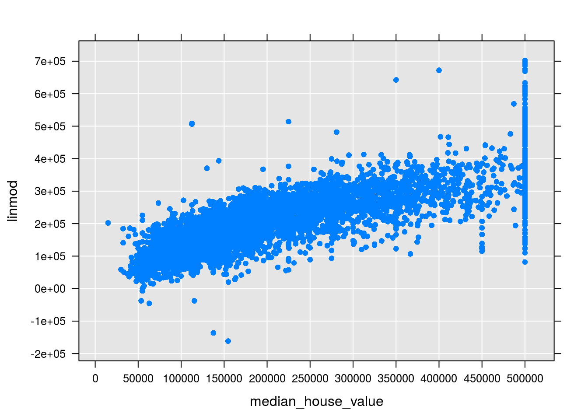
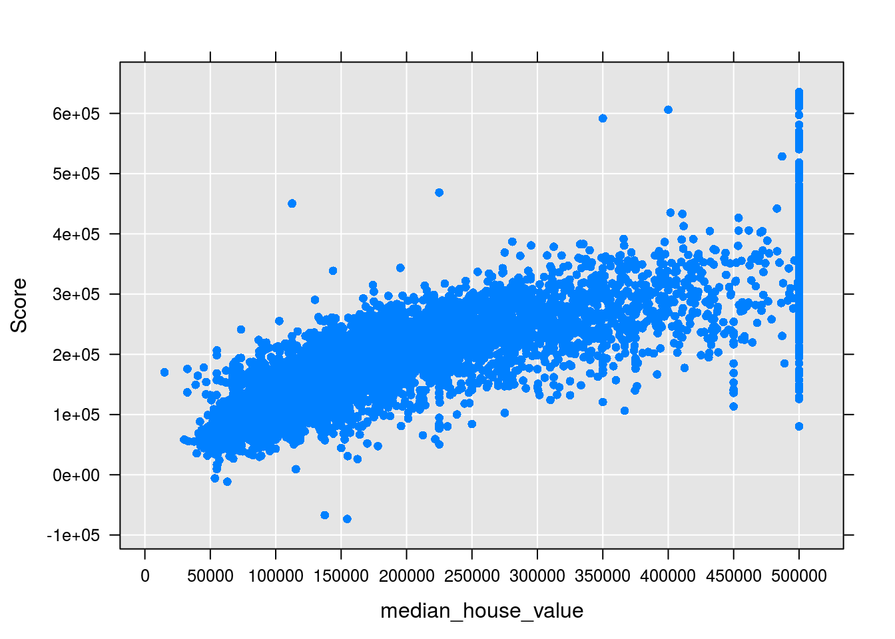

Chapter 3 Regression Models
3.1 Splitting into Train and Test Sets
Let’s sample our data into train and test sets. In order to do this efficiently, we will use the RevoScaleR package.
We’ll first create a RxXdfData object, which is a more efficient and scalable data structure than R data.frames. Their primary distinction is that they do not reside in memory, but on-disk.
library(tidyverse)
library(dplyrXdf)
library(foreach)##
## Attaching package: 'foreach'## The following objects are masked from 'package:purrr':
##
## accumulate, whenlibrary(doRSR)## Loading required package: iteratorslibrary(MicrosoftML)
theme_set(theme_minimal())
out_xdf <- file.path(
"data",
"housing.xdf")
housing_xdf <- rxDataStep(inData = housing,
outFile = out_xdf,
maxRowsByCols = nrow(housing)*ncol(housing),
rowsPerRead = 5000,
overwrite = TRUE)
housing_xdf %<>% factorise(ocean_proximity) %>%
persist(out_xdf, overwrite = TRUE)The RevoScaleR and MicrosoftML functions are primarily prefixed with rx. In this function below, we will use the rxSplit function to split our data into train and test sets. Observe that since our data is now on-disk, and compromises of multiple blocks, we have to use the .rxNumRows argument to inform the session how many rows are currently being processed in the current block:
split_xdf <- function(data) {
splits <- rxSplit(data,
outFileSuffixes = c("Train", "Test", "Validate"),
splitByFactor = "splitVar",
overwrite = TRUE,
transforms = list(splitVar = factor(
sample(c("Train", "Test", "Validate"),
size = .rxNumRows,
replace = TRUE,
prob = c(0.65, 0.25, 0.1)),
levels = c("Train", "Test", "Validate"))),
rngSeed = 123,
consoleOutput = TRUE)
return(splits)
}
splits <- split_xdf(housing_xdf)
names(splits) <- c("train", "test", "validate")Now that we have our train and test sets, we can conduct begin to train our models.
3.2 Training Regression Learners
Let’s train our first regression model.
We can start with the a glm model. GLMs, short for generalized linear models, are a general class of linear algorithms. In this exercise, our goal is to predict the median housing value given the other variables.
lin_mod <- rxLinMod(median_house_value ~ housing_median_age + total_rooms + total_bedrooms +
population + households + median_income + ocean_proximity,
data = splits$train)That was pretty easy, but let’s generalize our approach so that we can estimate a variety of models quickly and efficiently.
First, we’ll create a wrapper function to automatically create our model matrix for us dynamically from our data.
make_form <- function(xdf = housing_xdf,
resp_var = "median_house_value",
vars_to_skip = c("splitVar", "longitude",
"latitude")) {
library(stringr)
non_incl <- paste(vars_to_skip, collapse = "|")
x_names <- names(xdf)
features <- x_names[!str_detect(x_names, resp_var)]
features <- features[!str_detect(features, non_incl)]
form <- as.formula(paste(resp_var, paste0(features, collapse = " + "),
sep = " ~ "))
return(form)
}
make_form(xdf = splits$train)## median_house_value ~ housing_median_age + total_rooms + total_bedrooms +
## population + households + median_income + ocean_proximity
## <environment: 0xadfcc10>Now let’s create a modeling wrapper, which will take our dataset, a formula, and a model, and train it for us.
estimate_model <- function(xdf_data = splits$train,
form = make_form(xdf = xdf_data),
model = rxLogit, ...) {
rx_model <- model(form, data = xdf_data, ...)
return(rx_model)
}Now we can quickly iterate over our data and train models using different learning algorithms. For example, the above example suffers from the issue that we didn’t scale our data prior to learning. This can have an adverse effect on the optimization function of the learning algorithm, as it’ll favor the variables with more disperse scales.
We’ll use the SDCA - Stochastic Dual Coordinate Ascent learning algorithm, which automatically applies a min-max scaling to our data prior to training.
sdca <- estimate_model(model = rxFastLinear, type = "regression")## Automatically adding a MinMax normalization transform, use 'norm=Warn' or 'norm=No' to turn this behavior off.
## Using 2 threads to train.
## Automatically choosing a check frequency of 2.
## Warning: Skipped 141 instances with missing features/label during training
## Auto-tuning parameters: maxIterations = 110.
## Auto-tuning parameters: L2 = 0.0001.
## Auto-tuning parameters: L1Threshold (L1/L2) = 0.
## Using best model from iteration 48.
## Not training a calibrator because it is not needed.
## Elapsed time: 00:00:01.6831767
## Elapsed time: 00:00:00.0678240summary(sdca)## Call:
## model(formula = form, data = xdf_data, type = "regression")
##
## SDCAR (RegressorTrainer) for: median_house_value~housing_median_age+total_rooms+total_bedrooms+population+households+median_income+ocean_proximity
## Data: xdf_data (RxXdfData Data Source)
## File name: /home/alizaidi/bookdown-demo/housing.splitVar.Train.xdf
##
## First 12 of 12 Non-zero Coefficients:
## (Bias): -221101.6
## population: -893426.4
## median_income: 539692.2
## total_bedrooms: 338512.2
## ocean_proximity.ISLAND: 324354.5
## ocean_proximity.NEAR BAY: 288516.2
## ocean_proximity.NEAR OCEAN: 285277.7
## ocean_proximity.<1H OCEAN: 271619.3
## households: 251829.5
## ocean_proximity.INLAND: 202295.3
## total_rooms: -81016.05
## housing_median_age: 32083.273.3 Scoring Our Data on the Test Set
Now that we our model trained, we can score it on our test set.
Let’s create a prediction XDF where we’ll save our results to.
pred_xdf <- file.path("/home", system("whoami", intern = TRUE), "scored.xdf")
if (file.exists(pred_xdf)) file.remove(pred_xdf)## [1] TRUEscored_xdf <- RxXdfData(pred_xdf)rxPredict(lin_mod, data = splits$test,
outData = pred_xdf, writeModelVars = T,
predVarNames = c("linmod"), overwrite = T)
rxGetInfo(pred_xdf)## File name: /home/alizaidi/scored.xdf
## Number of observations: 5150
## Number of variables: 9
## Number of blocks: 5
## Compression type: zlibrxLinePlot(linmod ~ median_house_value, data = pred_xdf, type = "p")
Let’s also score our SDCA model:
rxPredict(sdca, data = splits$test,
outData = pred_xdf, writeModelVars = T)## Elapsed time: 00:00:00.2908180# rxGetInfo(pred_xdf, numRows = 2)
rxLinePlot(Score ~ median_house_value, data = pred_xdf, type = "p")
3.4 Training Many Models Concurrently
Let’s take our functions and train multiple models in parallel. We have already trained two linear models. Let’s add two ensemble tree algorithms to the mix, rxBTrees, and simultaneously train a random forest using rxDForest.
To run them in parallel, we can use the foreach package with a local parallel backend.
rxSetComputeContext(RxLocalParallel())
registerDoRSR(computeContext = rxGetComputeContext())
models <- list("btrees" = rxBTrees,
"forest" = rxDForest)
models <- foreach(i = models) %dopar% estimate_model(model = i)
names(models) <- c("btrees", "forest")
models## $btrees
##
## Call:
## model(formula = form, data = xdf_data)
##
##
## Loss function of boosted trees: bernoulli
## Number of boosting iterations: 10
## No. of variables tried at each split: 2
##
## OOB estimate of deviance: NA
##
## $forest
##
## Call:
## model(formula = form, data = xdf_data)
##
##
## Type of decision forest: anova
## Number of trees: 10
## No. of variables tried at each split: 2
##
## Mean of squared residuals: 4591841792
## % Var explained: 65lapply(models, summary)## $btrees
## Length Class Mode
## ntree 1 -none- numeric
## mtry 1 -none- numeric
## type 1 -none- character
## forest 10 -none- list
## oob.err 4 data.frame list
## init.pred 1 -none- numeric
## params 65 -none- list
## formula 3 formula call
## call 3 -none- call
##
## $forest
## Length Class Mode
## ntree 1 -none- numeric
## mtry 1 -none- numeric
## type 1 -none- character
## forest 10 -none- list
## oob.err 4 data.frame list
## params 65 -none- list
## formula 3 formula call
## call 3 -none- call3.5 Exercise
- Use the
rxDTreefunction to sit a single regression tree to this dataset. - Visualize the fit of your decision tree using the
RevoTreeViewlibrary and it’screateTreeViewandplotfunctions.